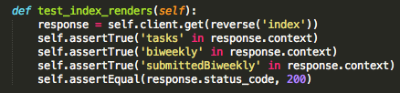
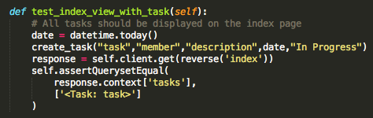
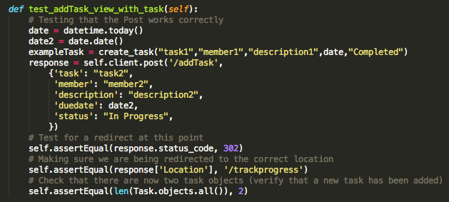
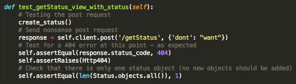
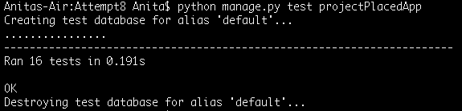

Providing tests for our code is a way to ensure that our code is working correctly. It is important because it can help us to identify code which causes errors, making debugging easier and saving us time. Of course, it would be preferable to have automated testing to help make the developing process simpler. After making some changes to the system, we can run the tests to make sure the code is still running as intended without having to go through the time consuming process of manual testing. Here are some initial strategies for testing the system that we will be using in the future.
Unit Testing
Unit testing is a process in software development where we test individual units of code (small, highly specific areas of code) independently of other code to make sure that they are working as intended. We will focus on making as many unit tests as we can, especially for custom methods.
Functional Testing
Functional tests ensure that the functional requirements have been met.
Integration Testing
Integration tests cover different aspects of the system and make sure that the code is working together. For our platform, we will be writing the back end in Django and the front end in AngularJS. It is important that these aspects not only work well individually, but together as well. We have to ensure that data flow is also handled correctly.
User Acceptance Testing
To ensure satisfaction in our platform, we have conducted user acceptance testing with our client and potential users.
- Client
During our last meeting with the clients, we also conducted the user testing with them as well to get an overview of a user from outer company's prespective. We received positive feedback from the UX perspective such as flows from one page to another as well as the aesthetic view of the User Interface.
Some constructive feedback has been taken into account such as modifying misleading paragraph and instructions on the website. Potential use of the platform has also been discussed.
- Students
After the final version of the platform was finalised, we conducted several user testing with fellow colleague in the computer science department and gathered their feedback.
Some constructive feedback has been taken into account such as design and page flows.
| Test |
Result |
| Design |
We have made better design decisions based on the target market. We showed them the initial website and asked for improvement or other feedback from their past experiences in using team management tool. We have done early research testing in the lifecycle in order to make the platform sustainable for our client. We have provided wireframes and prototypes to begin with and compare it with the final product. |
| Content |
We make sure the content of our platform is understandable, readable and easy to use. We make sure all of the desired features are there and user adaptability level is high. Based on our testing, we have improved some of the word choices within the platform to avoid confusion, as well as the placing of some description |
| Functionality |
Selected user was given the opportunity to test out all of our functional features. They have tried to save the bi weekly report, the task table and review saved reports. Comment box was also tested and we had a great feedback from the user. |
Testing AngularJS
The AngularJS documentation recommends the following tools for testing.
Karma
Karma is a test runner written by the Angular team. It is a Javascript command line tool that creates a web server, which will load our source code and execute our tests. It is useful as it can execute tests in multiple browsers. We will mainly use it for unit testing, but Karma can also be used for integration testing as well.
Jasmine
Jasmine is one of the most popular development frameworks used for testing angular applications. This framework also provides functions to help with structuring tests and keeping them well documented, and so it will be a useful tool to use. For the testing framework, AngularJS can be tested using any JavaScript unit testing framework. However, Jasmine is commonly used and we will be following the recommendation in the AngularJS documentation and using it as well. There seems to be really good documentation for Jasmine, which will support our testing.
Testing Django

We can do automated testing in Django by using a collection of tests (a test suite). Django has a Test Execution Framework and various utilities to help us verify that our code is working as expected. We can write tests in Django using the unittest module, which is built into the Python standard library. We can use it to conduct both unit tests and integration tests. There are other tools/modules (and other Python Test Frameworks) that can be used (such as doctest and nose). However, when testing Django apps, tests written in unittest run the fastest, and offer a much more robust solution for testing. Then to add the tests to the Django project, we will have to add a tests.py file and put our tests inside of there. Alternatively, we can also define a tests directory. Django documentation has helpful information and many examples that we will be using.
Other Testing Frameworks and tools can be used (such as Mocha, Chai, Sinon, and many more). Although we will mainly be looking at unit tests, there is also a recommended tool for end to end testing called Protractor (which uses Jasmine for its test syntax).
Our Django Tests
We wrote some simple tests in Django to make sure that our backend code was working as intended. We followed a test-after approach, where we wrote the code and tested at the end. The tests helped us to discover issues, which we then promptly fixed, and now assure us that everything is working correctly.
We are using Django's unittest library to conduct the tests. There were also other tools (as explained above in the initial testing strategies section), but we decided to use unittest as it ran the fastest, and there was a lot of useful information in the Django documentation which we could use. We mainly tested our views because it included most of the code running the backend of our platform.

The above test is an example of one of the tests we wrote to check whether the page was rendering correctly without any errors. We use the context property of the HttpResponse to make sure that the page is not only rendering properly, but delivering the correct content to the user.

We have also created tests to check whether the correct data was being displayed on the page. In the above example, we check whether the task table on the index page displays all the tasks we want. We created a shortcut function to create a task object and then made sure it matched with what the page was displaying using AssertQueryEqual.

We also had to test slightly more complicated views which were handling POST requests. We used the self.client.post method to send a mock POST request to the view (with data we provided), and then checked that the view was handling that data correctly.

In addition, we checked that sending POST requests with random data produced a Http404 response in some views, as we expected.

Resources